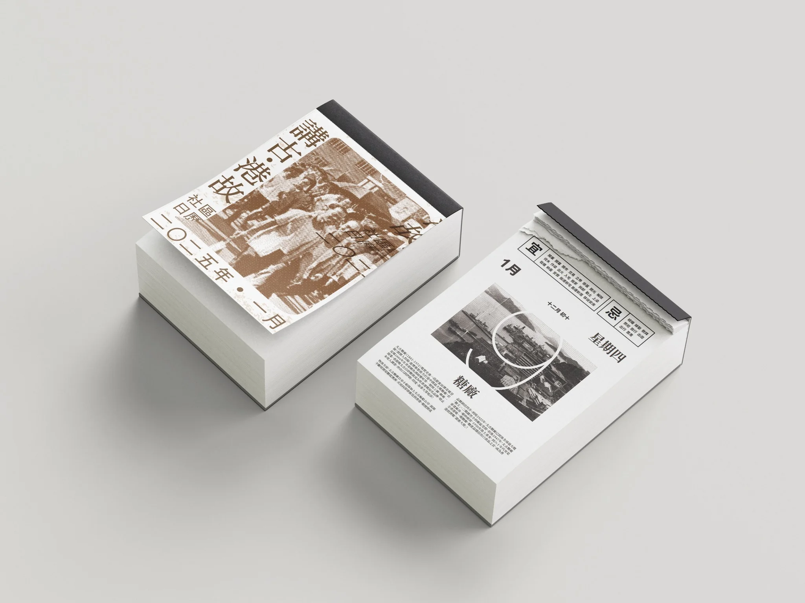

01
2026
Lightly in the Forest
Eco-Resort Design
Gaoligong Mountains, Yunnan / Tea Heritage · Ecology · Low-Impact Architecture
Outstanding Graduation Thesis · Tsinghua University
Hao Chang
Architectural designer
Selected work
2024–2026
Eco-Resort Design
Gaoligong Mountains, Yunnan / Tea Heritage · Ecology · Low-Impact Architecture
Outstanding Graduation Thesis · Tsinghua University
University Classroom Renovation
Tsinghua University, Beijing / Education · Adaptive Reuse · Interior Architecture
Commissioned by Tsinghua University
Water-Resilient Community Design
Kampung Melayu, Jakarta / Flood Resilience · Civic Infrastructure · Collective Life
SOM China Fellowship · Winner
Theater & Civic Space Design
Wudaokou, Beijing / Performance · Social Infrastructure · Public Life

Mixed-Use Civic Architecture
Zhongli, Taoyuan / Migration · Public Space · Care
Featured in ArchDaily Student Project Awards 2025
Erdai Art Museum & Military Heritage Reuse
Fenggui Peninsula, Penghu / Military Heritage · Memory · Landscape

Pilgrimage Architecture & Landscape Design
Mount Kailash, Tibet / Ritual · Ecology · Shelter
Urban Library Design
Chang’an Avenue, Beijing / Knowledge · Civic Life · Infrastructure
Campus Atrium Design
Tsinghua University, Beijing / Informal Learning · Shared Space · Adaptive Reuse
1st Prize · Ziqiang Technology Building Atrium Design Competition
Historic Waterfront Urban Design
Shichahai, Beijing / Water · Heritage · Urban Regeneration
Gold Award · Urban Design · China Human Settlements Academic Year Award, 2025

Art, Performance & Editorial Design
Across Media / Drawing · Editorial Design · Photography · Performance
Eco-Resort Design
Outstanding Graduation Thesis · Tsinghua University
University Classroom Renovation
Commissioned by Tsinghua University
Water-Resilient Community Design
SOM China Fellowship · Winner
Theater & Civic Space Design
Mixed-Use Civic Architecture
Featured in ArchDaily Student Project Awards 2025
Erdai Art Museum & Military Heritage Reuse
Pilgrimage Architecture & Landscape Design
Urban Library Design
Campus Atrium Design
1st Prize · Ziqiang Technology Building Atrium Design Competition
Historic Waterfront Urban Design
Gold Award · Urban Design · China Human Settlements Academic Year Award, 2025
Art, Performance & Editorial Design
How can architecture hold together
ecological change and collective life?